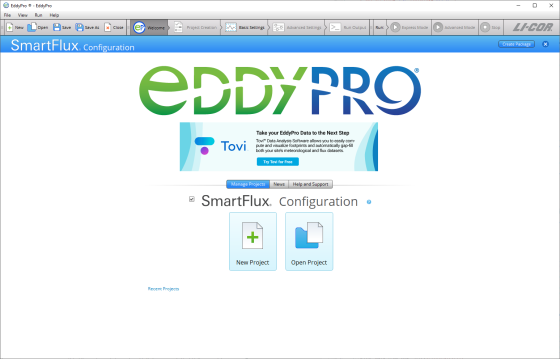
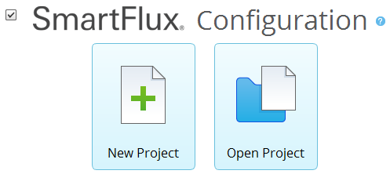
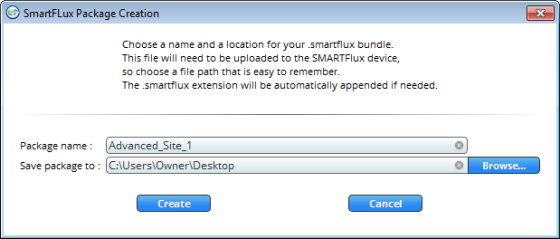

EddyPro® 7 Software
Running EddyPro in the SmartFlux System
The SmartFlux® System is an essential component for LI-COR eddy covariance systems that are based upon the LI-7500A/RS/DS and LI-7200/RS gas analyzers. The original SmartFlux System reads the analog signals from the sonic anemometer . It installs in the LI-7550 Analyzer Interface Unit. The SmartFlux 2 and 3 Systems read the digital signal from the sonic anemometer. They install in a LI-COR Biomet enclosure, LI-COR Systems Enclosure, or another suitable enclosure.
Both the original SmartFlux System and the SmartFlux 2 or 3 Systems run EddyPro to process .ghg files. They provide:
- Fully corrected eddy covariance results processed by EddyPro in Express or Advanced mode in real-time with a 30-minute averaging interval.
- GPS location and time keeping for populating metadata location information and synchronizing system clocks with GPS satellite clocks.
- Compatibility with FluxSuite for online monitoring.
The SmartFlux 2 and 3 Systems also provides:
- Digital data and diagnostics acquisition from the sonic anemometer.
- A USB drive that is easy to access when mounted at the bottom of a tower.
- Pass-through power to the sonic anemometer.
EddyPro provides SmartFlux configuration mode, which is used to create a custom configuration file for the SmartFlux System. To use this mode, check the SmartFlux Configuration box on the welcome page, and proceed through EddyPro as you normally would. The steps are summarized below:
- Check the SmartFlux Configuration box on the welcome page.
- 
- Select New Project or Open Project..
- 
- If you are creating a New Project and you do not intend to use planar-fit, automatic time-lag optimizations, or in situ spectral corrections:
- Set the Raw Data Directory (one .ghg file is necessary).
- Select Variables, if applicable.
- Set Flags.
- Configure Advanced Settings (see Overview of Advanced Processing).
- If you are creating the SmartFlux configuration file from an existing project:
- Click Open Project and select the project.
- Alter any settings that need to be changed.
- Configure Advanced Settings (see Overview of Advanced Processing).
- If you are using planar-fit, automatic time-lag optimization, or in situ spectral corrections (see Using planar fit, in situ spectral corrections and timelag optimization in SmartFlux for details):
- Begin with a new project or existing project, as described above.
- Select a planar-fit file that was generated by EddyPro using data from your site.
- Select the automatic time-lag optimization file that was generated by EddyPro using data from your site.
- Select the in situ spectral corrections file that was generated by EddyPro using data from your site.
- Click Create Package in the upper right of EddyPro.
- When prompted, name the package, select a directory and click Create.
- 
- The configuration file has a .smartflux extension.
- Upload the file to the SmartFlux System.
- This is completed in the gas analyzer configuration software.
{kind=link}
{kind=link}
{kind=link}
In this page: